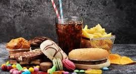
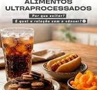

conhecendo os alimentos: do natural aos industrializados
Os alimentos ultraprocessados são produtos industriais feitos com muitos ingredientes e substâncias químicas adicionadas, como corantes, aromatizantes, conservantes e excesso de açúcar, gordura e sal. Eles passam por várias etapas de processamento e geralmente possuem pouca quantidade de alimentos naturais em sua composição.
Os alimentos ultraprocessados podem conter vários ingredientes artificiais ou industrializados que não são usados na cozinha caseira comum. Alguns dos principais são:
• Corantes artificiais (para dar ou intensificar a cor) • Aromatizantes (para reforçar cheiro e sabor) • Conservantes (para aumentar o tempo de validade) • Realçadores de sabor, como glutamato monossódico • Adoçantes artificiais (no lugar do açúcar) • Emulsificantes (ajudam a misturar ingredientes que normalmente não se misturam, como água e óleo) • Estabilizantes e espessantes (para dar textura e consistência)1. Refrigerante 2. Biscoito recheado 3. Macarrão instantâneo 4. Nuggets de frango 5. Salgadinho de pacote
O consumo frequente de alimentos ultraprocessados pode trazer vários impactos negativos para a saúde, principalmente quando eles substituem alimentos naturais na alimentação do dia a dia.

